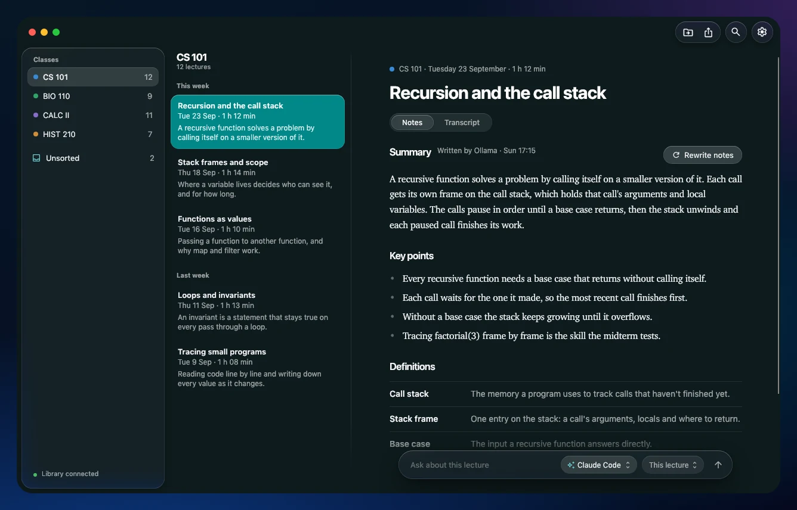
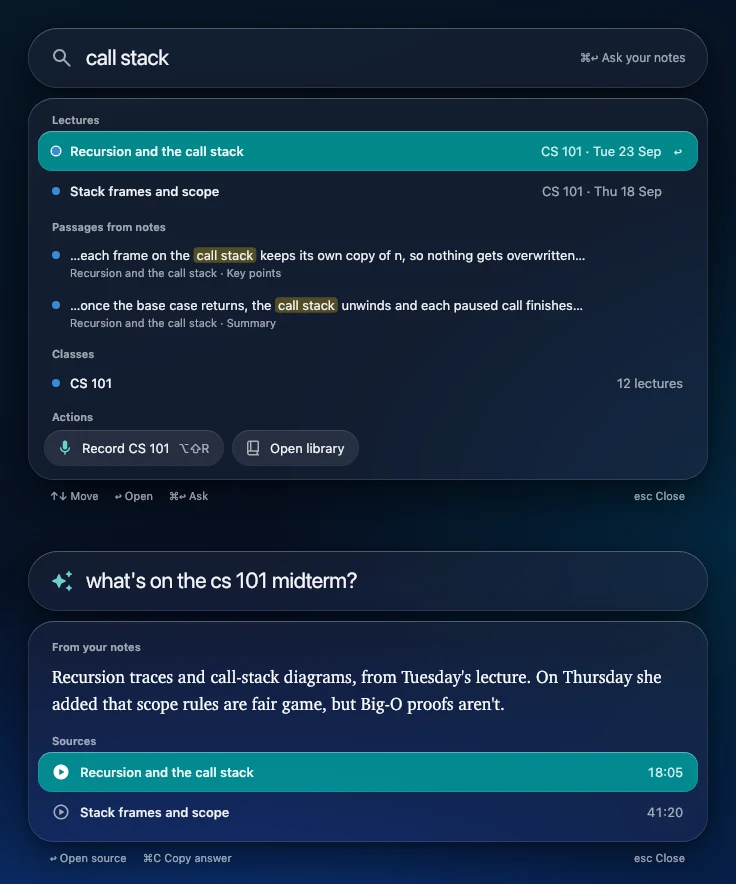
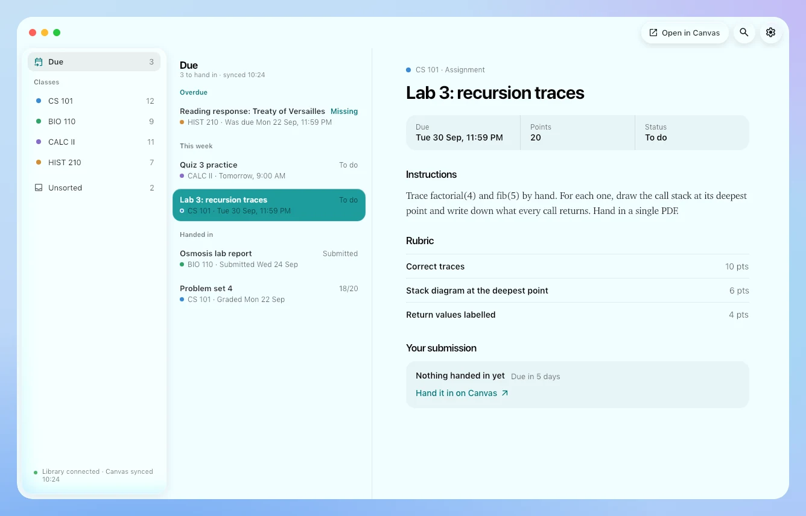
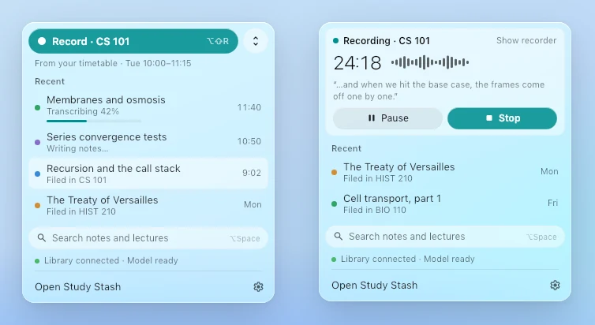

- Free and open source
- Mac and Windows
- Stays on your computers
Your lectures, written up and filed by class.
Record a lecture, and it's transcribed on your computer, filed under the right class, and turned into study notes, right next to your Canvas assignments and ready to ask about.
One download for each computer, whether it records, keeps the library, or both. Release notes and every file on GitHub.

How it works
From the lecture hall to notes you'd actually reread.
-
Record
Click Record in the menu bar or tray, or press ⌥⇧R / Ctrl+Alt+R. A tiny pill shows the time and the level.
-
Transcribe
It's transcribed on your own computer, as you go or, to save battery, after class. The audio never leaves it.
-
Write notes
A summary, key points, definitions and questions to review, written by the AI you choose, with formulas and diagrams drawn properly.
-
File it
Each lecture lands under its class, worked out from what was said. Anything it can't place waits in Unsorted.
What it does
Ask and find
Ask about one lecture, a class, or all of them.
The quick panel (⌥Space on a Mac, Alt+Shift+Space on Windows) finds lectures, passages in your notes and classes in a second, and answers a question from your own notes, with the lecture and the minute it came from.
- The Ask bar under every lecture's notes, with the engine you pick for that question
- Answers appear as they're written
- Claude can read your library too, over MCP, if you turn it on

Canvas
What's due, next to what was said about it.
Study Stash reads Canvas through Chrome with your own sign-in, so there's no password or token to hand over, and it only reads. Nothing on Canvas changes.
- What's due across your classes, with each assignment's instructions and rubric
- Your submissions and feedback, modules, files, pages and announcements
- Filed into each class's folder, about once an hour

Always a click away
Lives in your menu bar, not in your way.
Record, your recent lectures and search are in the menu bar on a Mac and the tray on Windows. It looks at home on both: Liquid Glass on a Mac, Windows 11's own look on a PC, light and dark, in twenty colour themes.
- Pause or stop from the menu bar while it records
- Notes are plain Markdown files, one folder per class
- Keeps itself up to date, never while it's recording

One computer or two
One app with two jobs. Use it the way that suits you.
Start on one computer. Later, record on a laptop too with Settings → Your library → Add a laptop, or move your library to a computer at home in Settings → Connection, with nothing to reinstall.
Just this computer
Your laptop records, keeps the library and writes the notes itself. Nothing else to set up; notes are written while it's on.
A laptop and a library
A computer that stays on at home (a Mac mini, an old laptop, any Mac or PC) keeps the library, writes the notes and syncs Canvas, even while your laptop sleeps. Your laptop reaches it at home or, anywhere, over Tailscale.
The privacy promise
Your recordings never leave your computers.
- Your audio never leaves.It's transcribed on the computer that recorded it.
- No account, no server.There's no Study Stash cloud. Your library is a folder on a computer you own, and your notes are Markdown files you can open, back up or sync however you like.
- No analytics.The app doesn't track you, count you or report on you. Nobody at Study Stash can see your lectures.
- You choose the AI.Ollama keeps everything on your computer. Claude Code, Codex or Gemini use the plan you already have, and only when you pick them.
- Canvas and calendars are read-only.Study Stash reads with your own sign-in and changes nothing. What it reads goes only to your library.
- Open source.Every line is on GitHub, so you don't have to take our word for any of this.
The details are in the privacy policy.
Your library in your pocket.
Read your notes, ask a question and see what's due from your iPhone, iPad or Android phone. There's no app store involved: it's a web app your own library serves.
Download
Free, for Mac and Windows.
The same app for every computer. Setup asks how you'll use it: just this computer, your library, or your laptop.
Mac
This computerOpen the DMG and drag Study Stash into Applications. It's signed and notarized by Apple, so it opens like any app from the internet. Allow the microphone when it asks.
Download Study-Stash.dmgWindows
This computerRun the Setup.exe. It installs for your account only, with no admin rights needed. If Windows says "Windows protected your PC", click More info, then Run anyway.
Download Study-Stash-Setup.exeEvery update is checked against the release's SHA256SUMS.txt before it installs.
Prefer a terminal? The install commands are in the README.
Record only where you're allowed to: many schools and places need everyone's consent.
Study Stash is free. If it helps you, buy us more Claude usage.